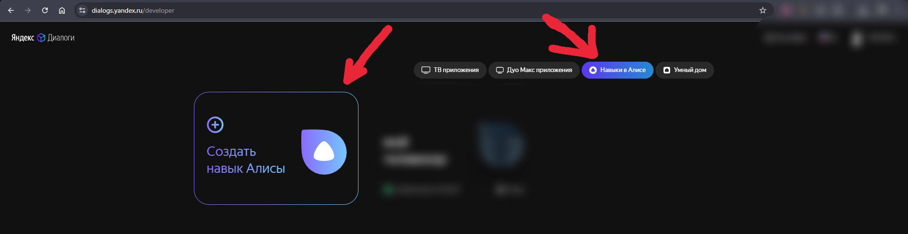
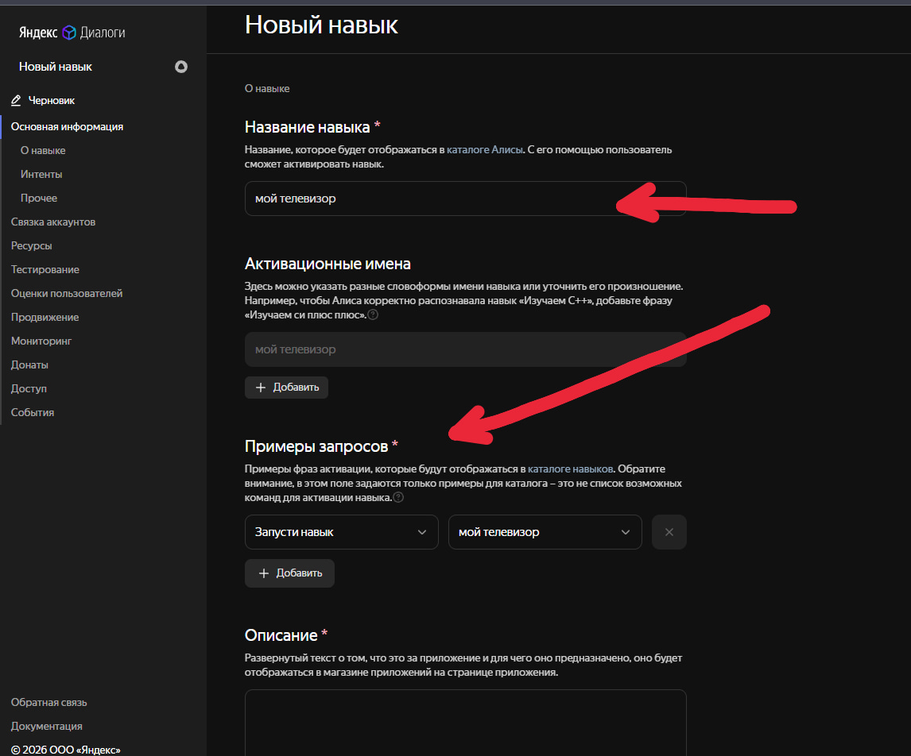
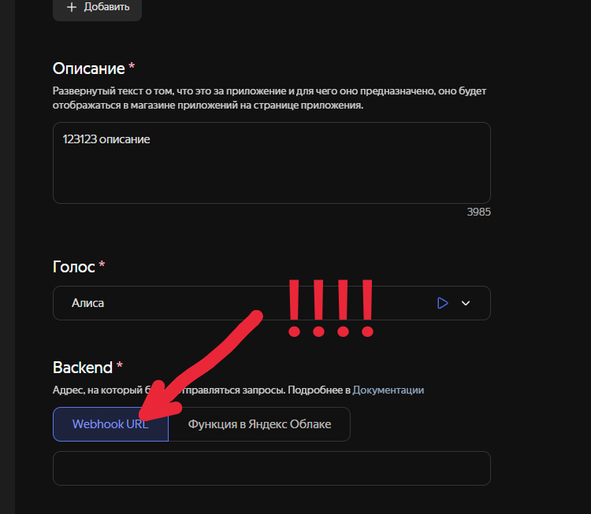
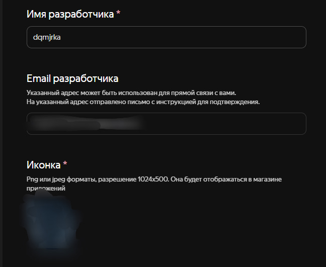

Управление телевизором через Алису
Пошаговая инструкция по настройке навыка и сопряжению устройств
Шаг 1
- Включаем VPN на ПК если мы в РФ или РБ.
- Запускаем AlisaTV и нажимаем в первой вкладке «Запустить сервер».
Шаг 2. Подключение Алисы с нашим сервером
Входим в аккаунт, где привязана Алиса.
Нажимаем «Создать навык».

[ 1.jpg ]Вводим название навыка, к примеру: мой телевизор.
В примеры запросов ставим что хотим, к примеру:
запусти навык мой телевизор
Дальше заполняем любое описание и голос.

[ 2.jpg ]- Где Backend ставим «Webhook URL».
- Возвращаемся в приложение, нажимаем сгенерировать, копируем домен сервера и вставляем.
- Домен выглядит примерно так: https://1342-12-123-12-55.ngrok-free.app/alice
- Если вылезет ошибка, то переподключите VPN! VPN обязателен, если вы в РФ или РБ.

[ 3.jpg ]- В тип доступа ставим «Приватный», чтобы могли использовать только вы.
- Категорию ставим «Управление».
- Имя разработчика — ваше имя.

[ 4.jpg ]Ставим иконку любую и нажимаем «Сохранить», потом «Отправить на модерацию».
Ш
После того как напишет, что модерация пройдена, подходим к Алисе и говорим: «Запусти навык [название навыка]».
После этого Алиса скажет: «Навык запущен».
Заходим в приложение, выбираем телевизор и нажимаем на кнопку «Запрос на принятие». На телевизоре нужно нажать «Принять».
Дальше говорим типо «Включи телевизор» и разные команды.